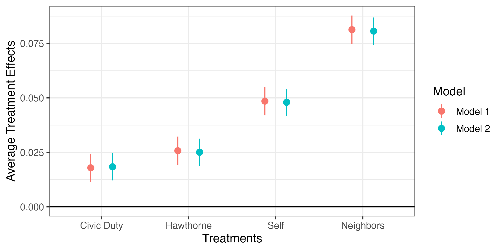
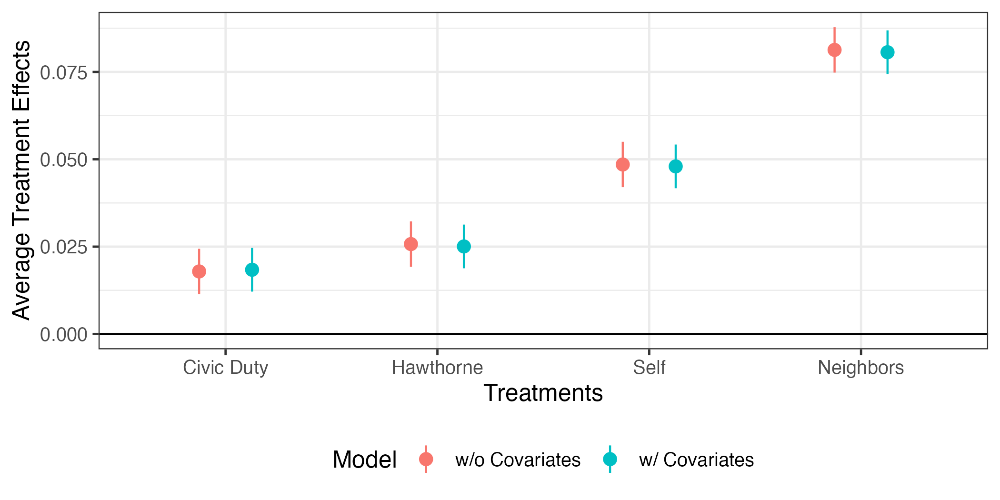

因果推論の考え方とランダム化比較試験
スライド
パッケージ
通常、Rでのパッケージのインストールとアップーでとにはinstall.packages()関数、読み込みにはlibrary()、またはrequire()関数を使う。また、R公式レポジトリにないパッケージは{devtools}か{remote}パッケージを使う。これらの関数を使い分けることは面倒なので、本講義ではこれらの処理を統合した{pacman}パッケージを使用する。まずは、{pacman}パッケージをインストールする。
パッケージを読み込む際、pacman::p_load(読み込むパッケージ名)を入力する。インストールされていない場合は、自動的にCRANからダウンロード&インストールした上で読み込んでくれるので便利だ1。以下では本講義で使用するパッケージとして{tidyverse}、{summarytools}、{fastDummies}、{modelsummary}を読み込む。
CRANでなく、GitHub上で公開されているパッケージを使う場合はpacman::p_load_gh()を使用する。()の中には"ユーザー名/リポジトリ名"を入力。たとえば、{BalanceR}の作成者のGitHubアカウント名はJaehyunSongであり、{BalanceR}のリポジトリ名はBalanceRだから、以下のように入力する。
データの読み込みと確認
.csv形式のデータを読み込むにはread_csv()関数を使用する。()内には読み込むファイルのパスを"で囲んで記入する。read_csv()関数はファイルの読み込みのみの機能しか持たない。現在の作業環境内に読み込んだデータを格納するためには代入演算子<-を使う。ここではdataフォルダー内のDay1_Data3.csvを読み込み、raw_dfという名のオブジェクトとしてく格納する。作業環境内のオブジェクトはRを再起動すると削除されるため、改めてパッケージ・データの読み込みが必要だ。
オブジェクトの中身を出力するためにはオブジェクト名を入力する。
# A tibble: 344,084 × 8
treatment gender yob hh_size voted2000 voted2002 voted2004 voted2006
<chr> <chr> <dbl> <dbl> <chr> <chr> <chr> <chr>
1 Civic Duty male 1941 2 no yes no no
2 Civic Duty female 1947 2 no yes no no
3 Hawthorne male 1951 3 no yes no yes
4 Hawthorne female 1950 3 no yes no yes
5 Hawthorne female 1982 3 no yes no yes
6 Control male 1981 3 no no no no
7 Control female 1959 3 no yes no yes
8 Control male 1956 3 no yes no yes
9 Control female 1968 2 no yes no no
10 Control male 1967 2 no yes no no
# … with 344,074 more rows
# ℹ Use `print(n = ...)` to see more rows 表形式データの大きさ（行の列の数）の確認にはdim()関数を使う。
表形式データの場合、各列には名前が付いており、それぞれが一つの変数に該当する。これら変数名のみの出力にはnames()関数を使う。今回のデータだと、列の数が少ないこともあり、一画面に全列が表示されるが、数百列のデータとなると画面に収まらないので、変数名を確認しておくことを推奨する。
データハンドリングとパイプ演算子
パイプ演算子には{magrittr}パッケージが提供する%>%とR 4.1から提供されるネイティブパイプ演算子の|>がある。現在の主流は古くから使われた%>%であるが、今後、|>が主流になると考えられるため、以下では|>を使用する。しかし、多くの場合、|>の代わりに%>%を使っても同じ結果が得られる。
パイプ演算子はパイプ前のオブジェクトを、パイプ後の関数の第一引数として渡す単純な演算子だ。たとえば、列名を変更する関数はrename()であるが、使い方はrenames(データ名, 新しい列名 = 既存の列名, ...)である。raw_dfのgender列の名前をfemaleに変更する場合は以下のように書く。
# A tibble: 344,084 × 8
treatment female yob hh_size voted2000 voted2002 voted2004 voted2006
<chr> <chr> <dbl> <dbl> <chr> <chr> <chr> <chr>
1 Civic Duty male 1941 2 no yes no no
2 Civic Duty female 1947 2 no yes no no
3 Hawthorne male 1951 3 no yes no yes
4 Hawthorne female 1950 3 no yes no yes
5 Hawthorne female 1982 3 no yes no yes
6 Control male 1981 3 no no no no
7 Control female 1959 3 no yes no yes
8 Control male 1956 3 no yes no yes
9 Control female 1968 2 no yes no no
10 Control male 1967 2 no yes no no
# … with 344,074 more rows
# ℹ Use `print(n = ...)` to see more rows ここで第1引数がraw_dfだが、パイプ演算子を使うと以下のようになり、人間にとって読みやすいコードになる。
# A tibble: 344,084 × 8
treatment female yob hh_size voted2000 voted2002 voted2004 voted2006
<chr> <chr> <dbl> <dbl> <chr> <chr> <chr> <chr>
1 Civic Duty male 1941 2 no yes no no
2 Civic Duty female 1947 2 no yes no no
3 Hawthorne male 1951 3 no yes no yes
4 Hawthorne female 1950 3 no yes no yes
5 Hawthorne female 1982 3 no yes no yes
6 Control male 1981 3 no no no no
7 Control female 1959 3 no yes no yes
8 Control male 1956 3 no yes no yes
9 Control female 1968 2 no yes no no
10 Control male 1967 2 no yes no no
# … with 344,074 more rows
# ℹ Use `print(n = ...)` to see more rows 要するに、X |> Yは「X（の結果）を使ってYを行う」ことを意味する。
続いて、変数のリコーディングをしてみよう。xの値が"A"なら1、それ以外は0のように、戻り値が2種類の場合のリコーディングにはif_else()を使用する。書き方は以下の通りだ。
たとえば、raw_dfのgender列の値が"female"なら1、それ以外なら0とし、その結果をfemale列として追加するコードは以下の通り。同値を意味する演算子が=でなく、==であることに注意すること（=は<-と同じ代入演算子であるが、Rでは代入演算子として=より<-の使用を推奨している）。
# A tibble: 344,084 × 9
treatment gender yob hh_size voted2000 voted2002 voted2004 voted2…¹ female
<chr> <chr> <dbl> <dbl> <chr> <chr> <chr> <chr> <dbl>
1 Civic Duty male 1941 2 no yes no no 0
2 Civic Duty female 1947 2 no yes no no 1
3 Hawthorne male 1951 3 no yes no yes 0
4 Hawthorne female 1950 3 no yes no yes 1
5 Hawthorne female 1982 3 no yes no yes 1
6 Control male 1981 3 no no no no 0
7 Control female 1959 3 no yes no yes 1
8 Control male 1956 3 no yes no yes 0
9 Control female 1968 2 no yes no no 1
10 Control male 1967 2 no yes no no 0
# … with 344,074 more rows, and abbreviated variable name ¹voted2006
# ℹ Use `print(n = ...)` to see more rows mutate()は指定された列に対して何らかの処理を行い、その結果を新しい列として追加するか、上書きする関数である。このmutate()関数の第1引数もデータであるため、以下のようにパイプ演算子を使うこともできる。
# A tibble: 344,084 × 9
treatment gender yob hh_size voted2000 voted2002 voted2004 voted2…¹ female
<chr> <chr> <dbl> <dbl> <chr> <chr> <chr> <chr> <dbl>
1 Civic Duty male 1941 2 no yes no no 0
2 Civic Duty female 1947 2 no yes no no 1
3 Hawthorne male 1951 3 no yes no yes 0
4 Hawthorne female 1950 3 no yes no yes 1
5 Hawthorne female 1982 3 no yes no yes 1
6 Control male 1981 3 no no no no 0
7 Control female 1959 3 no yes no yes 1
8 Control male 1956 3 no yes no yes 0
9 Control female 1968 2 no yes no no 1
10 Control male 1967 2 no yes no no 0
# … with 344,074 more rows, and abbreviated variable name ¹voted2006
# ℹ Use `print(n = ...)` to see more rows また、mutate()内には複数のコードを書くのもできる。voted2000列からvoted2006列までそれぞれの値が"yes"であれば、1を、それ以外の場合は0にリコーディングしてみよう。
raw_df |>
mutate(female = if_else(gender == "female", 1, 0),
voted2000 = if_else(voted2000 == "yes", 1, 0),
voted2002 = if_else(voted2002 == "yes", 1, 0),
voted2004 = if_else(voted2004 == "yes", 1, 0),
voted2006 = if_else(voted2006 == "yes", 1, 0))# A tibble: 344,084 × 9
treatment gender yob hh_size voted2000 voted2002 voted2004 voted2…¹ female
<chr> <chr> <dbl> <dbl> <dbl> <dbl> <dbl> <dbl> <dbl>
1 Civic Duty male 1941 2 0 1 0 0 0
2 Civic Duty female 1947 2 0 1 0 0 1
3 Hawthorne male 1951 3 0 1 0 1 0
4 Hawthorne female 1950 3 0 1 0 1 1
5 Hawthorne female 1982 3 0 1 0 1 1
6 Control male 1981 3 0 0 0 0 0
7 Control female 1959 3 0 1 0 1 1
8 Control male 1956 3 0 1 0 1 0
9 Control female 1968 2 0 1 0 0 1
10 Control male 1967 2 0 1 0 0 0
# … with 344,074 more rows, and abbreviated variable name ¹voted2006
# ℹ Use `print(n = ...)` to see more rows また、パイプ演算子は2つ以上使うこともできる。たとえば、rename()を使ってgender列をfemaleに変更し、mutate()でリコーディングを行う場合、以下のように書く。これはraw_dfを使ってrename()の処理を行い、その結果をmutate()関数のデータとして渡すことを意味する。
raw_df |>
rename(female = gender) |>
mutate(female = if_else(female == "female", 1, 0),
voted2000 = if_else(voted2000 == "yes", 1, 0),
voted2002 = if_else(voted2002 == "yes", 1, 0),
voted2004 = if_else(voted2004 == "yes", 1, 0),
voted2006 = if_else(voted2006 == "yes", 1, 0))# A tibble: 344,084 × 8
treatment female yob hh_size voted2000 voted2002 voted2004 voted2006
<chr> <dbl> <dbl> <dbl> <dbl> <dbl> <dbl> <dbl>
1 Civic Duty 0 1941 2 0 1 0 0
2 Civic Duty 1 1947 2 0 1 0 0
3 Hawthorne 0 1951 3 0 1 0 1
4 Hawthorne 1 1950 3 0 1 0 1
5 Hawthorne 1 1982 3 0 1 0 1
6 Control 0 1981 3 0 0 0 0
7 Control 1 1959 3 0 1 0 1
8 Control 0 1956 3 0 1 0 1
9 Control 1 1968 2 0 1 0 0
10 Control 0 1967 2 0 1 0 0
# … with 344,074 more rows
# ℹ Use `print(n = ...)` to see more rows以上のコードはデータを加工し、その結果を出力するだけであって、その結果を保存しない。
# A tibble: 344,084 × 8
treatment gender yob hh_size voted2000 voted2002 voted2004 voted2006
<chr> <chr> <dbl> <dbl> <chr> <chr> <chr> <chr>
1 Civic Duty male 1941 2 no yes no no
2 Civic Duty female 1947 2 no yes no no
3 Hawthorne male 1951 3 no yes no yes
4 Hawthorne female 1950 3 no yes no yes
5 Hawthorne female 1982 3 no yes no yes
6 Control male 1981 3 no no no no
7 Control female 1959 3 no yes no yes
8 Control male 1956 3 no yes no yes
9 Control female 1968 2 no yes no no
10 Control male 1967 2 no yes no no
# … with 344,074 more rows
# ℹ Use `print(n = ...)` to see more rows このように頑張ってデータを加工したもののその結果が全く反映されていない。加工したデータを引き続き使っていくためには、加工結果を作業環境内に保存する必要がある。作業環境内にオブジェクトを保存するためには代入演算子（<-）を使い、名前を付けて作業空間内に保存する（ファイルとして保存されるわけではない）必要がある。今回は加工の結果をdfという名で保存する。raw_dfに上書きしても問題はないが、生データはとりあえず作業空間内に残しておくことを推奨する（Rに慣れれば上書きしても良い）。
df <- raw_df |>
rename(female = gender) |>
mutate(female = if_else(female == "female", 1, 0),
voted2000 = if_else(voted2000 == "yes", 1, 0),
voted2002 = if_else(voted2002 == "yes", 1, 0),
voted2004 = if_else(voted2004 == "yes", 1, 0),
voted2006 = if_else(voted2006 == "yes", 1, 0))
df# A tibble: 344,084 × 8
treatment female yob hh_size voted2000 voted2002 voted2004 voted2006
<chr> <dbl> <dbl> <dbl> <dbl> <dbl> <dbl> <dbl>
1 Civic Duty 0 1941 2 0 1 0 0
2 Civic Duty 1 1947 2 0 1 0 0
3 Hawthorne 0 1951 3 0 1 0 1
4 Hawthorne 1 1950 3 0 1 0 1
5 Hawthorne 1 1982 3 0 1 0 1
6 Control 0 1981 3 0 0 0 0
7 Control 1 1959 3 0 1 0 1
8 Control 0 1956 3 0 1 0 1
9 Control 1 1968 2 0 1 0 0
10 Control 0 1967 2 0 1 0 0
# … with 344,074 more rows
# ℹ Use `print(n = ...)` to see more rows ちなみに、across()関数とラムダ式（無名関数）を組み合わせると以上のコードを効率化することもできる。across()は強力な関数だが、初心者にはやや難しいかも知れない。詳細は『私たちのR』の第13.1章を参照されたい。
記述統計量
記述統計量の計算には{summarytools}のdescr()関数が便利だ。descr(データ名)を入力するだけで各変数の記述統計量が出力される。実際にやってみると分かるが、情報量がかなり多い。しかし、実際の論文では各変数の歪度や尖度まで報告することはあまりないだろう。ここではstats引数を追加して、論文などでよく使う平均値（"mean"）、標準偏差（"sd"）、最小値（"min"）、最大値（"max"）、有効ケース数（"n.valid"）のみ出力する。
Descriptive Statistics
df
N: 344084
female hh_size voted2000 voted2002 voted2004 voted2006 yob
------------- ----------- ----------- ----------- ----------- ----------- ----------- -----------
Mean 0.50 2.18 0.25 0.39 0.40 0.32 1956.21
Std.Dev 0.50 0.79 0.43 0.49 0.49 0.46 14.45
Min 0.00 1.00 0.00 0.00 0.00 0.00 1900.00
Max 1.00 8.00 1.00 1.00 1.00 1.00 1986.00
N.Valid 344084.00 344084.00 344084.00 344084.00 344084.00 344084.00 344084.00 ただし、descr()を使うと数値型（numeric）変数の記述統計量のみ表示される。dfだと、treatment列は文字型（character）であるため、表示されない2。各グループがサンプルの何割かを計算するためには、treatment変数をダミー変数へ変換する必要がある。ダミー変数の作成は面倒な作業であるが、{fastDummies}パッケージのdummy_cols()を使えば簡単にできる。dummy_cols()の中にはselect_columns = "ダミー化する列名"を入れれば、当該変数をダミー変数へ変換し、新しい列として追加してくれる。それではtreatment列をダミー化&追加し、その結果をdfに上書きしてみよう。
# A tibble: 344,084 × 13
treatm…¹ female yob hh_size voted…² voted…³ voted…⁴ voted…⁵ treat…⁶ treat…⁷
<chr> <dbl> <dbl> <dbl> <dbl> <dbl> <dbl> <dbl> <int> <int>
1 Civic D… 0 1941 2 0 1 0 0 1 0
2 Civic D… 1 1947 2 0 1 0 0 1 0
3 Hawthor… 0 1951 3 0 1 0 1 0 0
4 Hawthor… 1 1950 3 0 1 0 1 0 0
5 Hawthor… 1 1982 3 0 1 0 1 0 0
6 Control 0 1981 3 0 0 0 0 0 1
7 Control 1 1959 3 0 1 0 1 0 1
8 Control 0 1956 3 0 1 0 1 0 1
9 Control 1 1968 2 0 1 0 0 0 1
10 Control 0 1967 2 0 1 0 0 0 1
# … with 344,074 more rows, 3 more variables: treatment_Hawthorne <int>,
# treatment_Neighbors <int>, treatment_Self <int>, and abbreviated variable
# names ¹treatment, ²voted2000, ³voted2002, ⁴voted2004, ⁵voted2006,
# ⁶`treatment_Civic Duty`, ⁷treatment_Control
# ℹ Use `print(n = ...)` to see more rows, and `colnames()` to see all variable names 画面には表示されないが、出力結果の下段を見るとtreatment_で始まるいくつかの変数が追加されたことが分かる。ここでは"tretmant"で始まる列のみを抽出つして確認してみよう。
# A tibble: 344,084 × 6
treatment `treatment_Civic Duty` treatment_Control treatme…¹ treat…² treat…³
<chr> <int> <int> <int> <int> <int>
1 Civic Duty 1 0 0 0 0
2 Civic Duty 1 0 0 0 0
3 Hawthorne 0 0 1 0 0
4 Hawthorne 0 0 1 0 0
5 Hawthorne 0 0 1 0 0
6 Control 0 1 0 0 0
7 Control 0 1 0 0 0
8 Control 0 1 0 0 0
9 Control 0 1 0 0 0
10 Control 0 1 0 0 0
# … with 344,074 more rows, and abbreviated variable names
# ¹treatment_Hawthorne, ²treatment_Neighbors, ³treatment_Self
# ℹ Use `print(n = ...)` to see more rows select()関数内には抽出する列名を入力するだけで良い。たとえば、femaleとyob列を抽出するならselect(female, yob)である。また、femaleからvoted2006までの意味でfemale:voted2006のような書き方もできる。他にも上の例のようにstarts_with()やends_with()、contain()を使って特定の文字列で始まる（で終わる、を含む）列を指定することもできる。一部の列を除外する場合は変数名の前に!か-を付ける。
とにかく、問題なくダミー化されていることが分かる。もう一度記述統計量を出してみよう。descr()は仕様上、出力される変数の順番はアルファベット順になるが、ここでは元の順番を維持するためにorder = "p"を追加する。また、通常の記述統計表が、先ほど見たものとは違って、各行が変数を、列は記述統計量を表す場合が多い。このように行と列を交換するためにはtranspose = TRUEを追加する3。
df |>
descr(stats = c("mean", "sd", "min", "max", "n.valid"),
order = "p", transpose = TRUE, headings = FALSE)| Mean | Std.Dev | Min | Max | N.Valid | |
|---|---|---|---|---|---|
| female | 0.50 | 0.50 | 0.00 | 1.00 | 344084.00 |
| yob | 1956.21 | 14.45 | 1900.00 | 1986.00 | 344084.00 |
| hh_size | 2.18 | 0.79 | 1.00 | 8.00 | 344084.00 |
| voted2000 | 0.25 | 0.43 | 0.00 | 1.00 | 344084.00 |
| voted2002 | 0.39 | 0.49 | 0.00 | 1.00 | 344084.00 |
| voted2004 | 0.40 | 0.49 | 0.00 | 1.00 | 344084.00 |
| voted2006 | 0.32 | 0.46 | 0.00 | 1.00 | 344084.00 |
| treatment_Civic Duty | 0.11 | 0.31 | 0.00 | 1.00 | 344084.00 |
| treatment_Control | 0.56 | 0.50 | 0.00 | 1.00 | 344084.00 |
| treatment_Hawthorne | 0.11 | 0.31 | 0.00 | 1.00 | 344084.00 |
| treatment_Neighbors | 0.11 | 0.31 | 0.00 | 1.00 | 344084.00 |
| treatment_Self | 0.11 | 0.31 | 0.00 | 1.00 | 344084.00 |
他にも以下のようにdfSummary()関数を使えば、綺麗な表としてまとめてくれる。しかも文字型、factor型変数の場合も度数分布表を作成してくれるので非常に便利だ。これも{summarytools}パッケージに含まれた機能なので、別途、パッケージを読み込む必要はない。
df |>
select(-starts_with("treatment_")) |>
dfSummary(headings = FALSE) |>
print(method = "render", round.digits = 3)| No | Variable | Stats / Values | Freqs (% of Valid) | Graph | Valid | Missing | ||||||||||||||||||||||||||||||||||||||||||||||||||||
|---|---|---|---|---|---|---|---|---|---|---|---|---|---|---|---|---|---|---|---|---|---|---|---|---|---|---|---|---|---|---|---|---|---|---|---|---|---|---|---|---|---|---|---|---|---|---|---|---|---|---|---|---|---|---|---|---|---|---|
| 1 | treatment [character] |
|
|
 |
344084 (100.0%) | 0 (0.0%) | ||||||||||||||||||||||||||||||||||||||||||||||||||||
| 2 | female [numeric] |
|
|
 |
344084 (100.0%) | 0 (0.0%) | ||||||||||||||||||||||||||||||||||||||||||||||||||||
| 3 | yob [numeric] |
|
86 distinct values | ![](data:image/png;base64, iVBORw0KGgoAAAANSUhEUgAAAJgAAABuCAQAAABxABKuAAAAAmJLR0QA/4ePzL8AAAAHdElNRQfmCBAOBDFTjKZVAAABx0lEQVR42u3cQZKCMBQAUbG8o3fQ8+gdPKVuQ7TUhoT8hH47NyN2zQ+BYZyeBxHH1gfQG4NBBoNO6Yup9dH87fa29F4rHnz6ZqfFP6Wx8+zVY7P3dSQhg0EGgzpZw25h9tedBGu3yOccSchgkMEgg0EGgwwGdbOt+GW+U6t3KT5MsHSfVnOX5khCBoMMBhkMCrvox7k/MRc22HbnPcaRhAwGGQwyGGQwyGCQwSCDQQaDDAYZDDIYZDDIYJDBIINBBoMMBhkMMhhkMMhgUOA/s62R/1Wz3NM8gwar98y1IwkZDAozklGfpciFCRbnfz2+cyQhg0EGgwwGGQwyGGQwyGCQwSCDQQaDAl1LtsK+x8dgB3bZ70hCBoMMBhkMarbo93JLOtfwLNnHLemcIwkZDDIYZDDIYNBOriXLPc2zk2DltjCOJGQwyGCQwaDNFv1YF9vLj2bDs2Ski+3l3+vjSEIGgwwGGQwyGFTxLBlrI1FK1W1FzC/lW8eRhAwGGQwyGFRw0R/nrPj2SZIb2kXPkpEur2t9DkcSMhhkMGjFGjbOIk+sWvRHWeQJRxJCv2H7HMK5KW1wN8hHl2TjOtmIcQ2DDAYZDHoBkgoxatSAN4MAAAAldEVYdGRhdGU6Y3JlYXRlADIwMjItMDgtMTZUMTQ6MDQ6NDkrMDA6MDC61XDjAAAAJXRFWHRkYXRlOm1vZGlmeQAyMDIyLTA4LTE2VDE0OjA0OjQ5KzAwOjAwy4jIXwAAAD10RVh0aWNjOmNvcHlyaWdodABDb3B5cmlnaHQgMjAwNyBBcHBsZSBJbmMuLCBhbGwgcmlnaHRzIHJlc2VydmVkLp5m3CkAAAAjdEVYdGljYzpkZXNjcmlwdGlvbgBHZW5lcmljIFJHQiBQcm9maWxlGqc4jgAAAABJRU5ErkJggg==) |
344084 (100.0%) | 0 (0.0%) | ||||||||||||||||||||||||||||||||||||||||||||||||||||
| 4 | hh_size [numeric] |
|
|
 |
344084 (100.0%) | 0 (0.0%) | ||||||||||||||||||||||||||||||||||||||||||||||||||||
| 5 | voted2000 [numeric] |
|
|
 |
344084 (100.0%) | 0 (0.0%) | ||||||||||||||||||||||||||||||||||||||||||||||||||||
| 6 | voted2002 [numeric] |
|
|
 |
344084 (100.0%) | 0 (0.0%) | ||||||||||||||||||||||||||||||||||||||||||||||||||||
| 7 | voted2004 [numeric] |
|
|
 |
344084 (100.0%) | 0 (0.0%) | ||||||||||||||||||||||||||||||||||||||||||||||||||||
| 8 | voted2006 [numeric] |
|
|
 |
344084 (100.0%) | 0 (0.0%) |
Generated by summarytools 1.0.1 (R version 4.2.1)
2022-08-16
バランスチェック
バランスチェックの簡単な方法はグループごとに処置前変数（pre-treatment variables）の平均値を比較することである。無作為割当が成功しているのであれば、処置前に測定された変数の平均値は近似するはずである。ここではグループ（treatment）ごとに性別、誕生年、世帯規模、2000〜2004年の投票参加の平均値を比較してみる。
df |>
group_by(treatment) |>
summarise(female = mean(female, na.rm = TRUE),
yob = mean(yob, na.rm = TRUE),
hh_size = mean(hh_size, na.rm = TRUE),
voted2000 = mean(voted2000, na.rm = TRUE),
voted2002 = mean(voted2002, na.rm = TRUE),
voted2004 = mean(voted2004, na.rm = TRUE))# A tibble: 5 × 7
treatment female yob hh_size voted2000 voted2002 voted2004
<chr> <dbl> <dbl> <dbl> <dbl> <dbl> <dbl>
1 Civic Duty 0.500 1956. 2.19 0.254 0.389 0.399
2 Control 0.499 1956. 2.18 0.252 0.389 0.400
3 Hawthorne 0.499 1956. 2.18 0.250 0.394 0.403
4 Neighbors 0.500 1956. 2.19 0.251 0.387 0.407
5 Self 0.500 1956. 2.18 0.251 0.392 0.402それぞれの変数の平均値は非常に似ているため、無作為割当が成功したと考えられる。しかし、変数の単位によって判断が難しいかも知れない。たとえば、2つのグループがあり、年齢の平均値の差は3、世帯規模のそれは2だとする。これを見ると年齢の方がよりバランスが取れていないようにも見えるが、年齢の幅は数十であるに対し、世帯規模はせいぜい5〜6程度であろう。したがって、各変数のばらつきまで考慮した比較が適切であり、その方法の一つが標準化バイアス（=標準化差分）である。
標準化差分を計算する便利パッケージ、{BalanceR}を使ってみよう。第1引数はデータだから、パイプで渡せば良い。BalanceR()内にはgroup引数にグループ識別変数を、covには処置前変数のベクトルを入れる。
blc_chk <- df |>
BalanceR(group = treatment,
cov = c(female, yob, hh_size, voted2000, voted2002, voted2004))
blc_chk Covariate Mean:Civic Duty SD:Civic Duty Mean:Control SD:Control
1 female 0.500 0.500 0.499 0.500
2 yob 1956.341 14.465 1956.186 14.436
3 hh_size 2.189 0.802 2.184 0.788
4 voted2000 0.254 0.435 0.252 0.434
5 voted2002 0.389 0.487 0.389 0.488
6 voted2004 0.399 0.490 0.400 0.490
Mean:Hawthorne SD:Hawthorne Mean:Neighbors SD:Neighbors Mean:Self SD:Self
1 0.499 0.500 0.500 0.500 0.500 0.500
2 1956.295 14.400 1956.147 14.579 1956.207 14.416
3 2.180 0.789 2.188 0.805 2.181 0.782
4 0.250 0.433 0.251 0.434 0.251 0.434
5 0.394 0.489 0.387 0.487 0.392 0.488
6 0.403 0.491 0.407 0.491 0.402 0.490
SB:Civic Duty-Control SB:Civic Duty-Hawthorne SB:Civic Duty-Neighbors
1 0.248 0.236 0.024
2 1.069 0.317 1.335
3 0.687 1.130 0.169
4 0.388 0.738 0.547
5 -0.108 -1.123 0.464
6 -0.182 -0.772 -1.472
SB:Civic Duty-Self SB:Control-Hawthorne SB:Control-Neighbors SB:Control-Self
1 0.120 -0.013 -0.225 -0.128
2 0.924 -0.754 0.272 -0.146
3 1.051 0.448 -0.515 0.365
4 0.566 0.350 0.158 0.178
5 -0.628 -1.015 0.572 -0.520
6 -0.619 -0.590 -1.289 -0.437
SB:Hawthorne-Neighbors SB:Hawthorne-Self SB:Neighbors-Self
1 -0.212 -0.115 0.097
2 1.022 0.609 -0.417
3 -0.958 -0.085 0.878
4 -0.192 -0.172 0.020
5 1.587 0.496 -1.092
6 -0.700 0.153 0.853 ちなみに、df内にfemaleからvoted2004は連続している（names(df)で確認してみよう）。この場合は以下のように（female:voted2004）書き換えることもできる。
標準化差分（標準化バイアス）を用いたバランスチェックはそれぞれのペアごとに計算を行うため、グループが多い場合は凡例が圧迫される場合が多い。しかし、重要なのは標準化差分の最大値だろう。ペア1、2、3でバランスが取れても、ペア4のバランスが取られていない場合は無意味だからだ。また、標準化差分の場合、符号の意味はなく、絶対値が重要だ。また、バランスチェックにおいてグループごとの平均値や標準偏差は不要である。ここでsummary()関数を使うと、絶対値が最も大きい標準化差分のみ出力される。
Covariate Abs_Maximum_SB
1 female 0.248
2 yob 1.335
3 hh_size 1.130
4 voted2000 0.738
5 voted2002 1.587
6 voted2004 1.472 plot()関数を使えば、これらの結果を可視化することもできる。
先ほど述べたようにバランスチェックで重要なのは絶対値が最も大きい標準化差分である。plot()内にsimplify = TRUEを指定すれば最大値のみ表示され、更にabs = TRUEにすると絶対値へ変換される。また、垂直のガイドラインはvline引数で変更できる。
処置効果の確認
グループごとの応答変数の平均値
処置効果を確認するためには各グループごとの応答変数（ここではvoted2006）の平均値を計算し、処置群の平均値から統制群の平均値を引く必要がある。まずは、特定の変数の平均値を計算する方法について紹介する。データ内にある特定の変数の平均値を計算するためにはsummarise()関数内に平均値を求めるmean()関数を入れる。たとえば、dfのvoted2006の平均値を計算するコードは以下の通りである。
# A tibble: 1 × 1
`mean(voted2006, na.rm = TRUE)`
<dbl>
1 0.316 na.rm = TRUEは「欠損値があれば、それを除外する」を意味し、指定されていない場合（=既定値）はFALSEになる。今回は欠損値がないものの、念の為に入れておく。
出力結果を見ると、平均値が表示される列の名前が`mean(voted2006, na.rm = TRUE)`となっており、非常に見にくい。この場合、以下のようにmean()の前に出力される列名を予め指定することもできる。
# A tibble: 1 × 1
Outcome
<dbl>
1 0.316 我々が知りたいのはvoted2006の平均値でなく、グループごとの平均値だろう。被験者がどのグループに属しているかわ示す変数はtreatmentであるが、summarise()にデータを渡す前にgroup_by()変数を使うと、グループごとに計算を行い、その結果を返す。
# A tibble: 5 × 2
treatment Outcome
<chr> <dbl>
1 Civic Duty 0.315
2 Control 0.297
3 Hawthorne 0.322
4 Neighbors 0.378
5 Self 0.345 group_by()内でも=演算子を使うと、グループ名が出力される列名を変更することができる。
df |>
# グループ名が表示される列名を Group にする。
group_by(Groups = treatment) |>
summarise(Outcome = mean(voted2006, na.rm = TRUE))# A tibble: 5 × 2
Groups Outcome
<chr> <dbl>
1 Civic Duty 0.315
2 Control 0.297
3 Hawthorne 0.322
4 Neighbors 0.378
5 Self 0.345 ここで一つ注目したいのが、グループの表示順番である。変数のデータ型が文字型だと（Rコンソール上でclass(df$treatment)を入力するか、dfの出力画面でtreatmentの下に<chr>と表示されていることで確認できる）、今のようにアルファベット順で表示される。しかし、統制群は最初か最後に来るのが通例である。この順番をアルファベット順でなく、任意の順番にするためにはtreatment変数をfactor型変数へ変換する必要がある。Factor型は「順序付きの文字型変数」だと理解しても良い4。列の追加・上書き（今回はtreatment列の上書き）の処理が必要なのでmutate()関数を使う。変数をfactor型に変換する関数はfactor()関数で、第1引数としてはfactor型へ変換する変数名を指定する。第2引数はlevelsであり、出力したい順番の文字型ベクトルを指定する。スペルミスに注意すること。
df |>
mutate(treatment = factor(treatment,
levels = c("Control", "Civic Duty",
"Self", "Neighbors", "Hawthorne")))# A tibble: 344,084 × 13
treatm…¹ female yob hh_size voted…² voted…³ voted…⁴ voted…⁵ treat…⁶ treat…⁷
<fct> <dbl> <dbl> <dbl> <dbl> <dbl> <dbl> <dbl> <int> <int>
1 Civic D… 0 1941 2 0 1 0 0 1 0
2 Civic D… 1 1947 2 0 1 0 0 1 0
3 Hawthor… 0 1951 3 0 1 0 1 0 0
4 Hawthor… 1 1950 3 0 1 0 1 0 0
5 Hawthor… 1 1982 3 0 1 0 1 0 0
6 Control 0 1981 3 0 0 0 0 0 1
7 Control 1 1959 3 0 1 0 1 0 1
8 Control 0 1956 3 0 1 0 1 0 1
9 Control 1 1968 2 0 1 0 0 0 1
10 Control 0 1967 2 0 1 0 0 0 1
# … with 344,074 more rows, 3 more variables: treatment_Hawthorne <int>,
# treatment_Neighbors <int>, treatment_Self <int>, and abbreviated variable
# names ¹treatment, ²voted2000, ³voted2002, ⁴voted2004, ⁵voted2006,
# ⁶`treatment_Civic Duty`, ⁷treatment_Control
# ℹ Use `print(n = ...)` to see more rows, and `colnames()` to see all variable names treatment列名の下が<fct>となっていることが分かる。これはtreatment列のデータ型がfactor型であることを意味する。問題なく動くことが確認できたので、dfを上書きしよう。
それでは、改めてグループごとのvoted2006の平均値を計算してみよう。今回は計算結果をout_mean_dfという名のオブジェクトとして格納する。
out_mean_df <- df |>
group_by(Groups = treatment) |>
summarise(Outcome = mean(voted2006, na.rm = TRUE))
out_mean_df# A tibble: 5 × 2
Groups Outcome
<fct> <dbl>
1 Control 0.297
2 Civic Duty 0.315
3 Self 0.345
4 Neighbors 0.378
5 Hawthorne 0.322今回は統制群は最初に出力されていることが確認できる。
それではこの結果をグラフとして示してみよう。作図には{ggplot2}パッケージを使う。まずはout_mean_dfをggplot()関数に渡す。ggplot()関数以降は、+演算子を使ってレイヤーを足していくこととなる。棒グラフのレイヤーはgeom_bar()関数であり、その中にaes()関数を入れる。aes()の中には棒グラフの作図に必要な情報を入れる必要がある（これをマッピング（mapping）と呼ぶ）。棒グラフを作成するために必要な最低限の情報とは各棒の横軸上の位置（x）と棒の高さ（y）だ。今回は横軸がグループ名、縦軸が平均値となる棒グラフを作る。aes()外側にはstat = "identity"を忘れずに付けること。
続いて、このグラフの見た目を調整してみよう。
out_mean_df |>
ggplot() +
geom_bar(aes(x = Groups, y = Outcome), stat = "identity") +
# 縦軸（y軸）のラベルを変更する
labs(y = "Mean(Outcome)") +
# grayテーマ（デフォルトのテーマ）を使用し、フォントサイズは14
theme_gray(base_size = 14)
また、geom_label()レイヤーを足すと、棒の上にラベルを付けることもできる。ラベルに必要な情報は各ラベルの横軸上の位置（x）、縦軸上の位置（y）、ラベルの表示内容（label）だ。今回のラベルは平均値の具体的な数値を入れてみよう。
out_mean_df |>
ggplot() +
geom_bar(aes(x = Groups, y = Outcome), stat = "identity") +
geom_label(aes(x = Groups, y = Outcome, label = Outcome)) +
labs(y = "Mean(Outcome)") +
theme_gray(base_size = 14)
小数点が長すぎるので3桁まで表示としよう。ここではsprintf()を使用する。使い方が簡単とは言えないが、覚える必要はなく、必要な時にググるか、本資料のコードをコピペすれば良い5。
out_mean_df |>
ggplot() +
geom_bar(aes(x = Groups, y = Outcome), stat = "identity") +
# 2桁までなら %.3f を %.2f に変更
geom_label(aes(x = Groups, y = Outcome, label = sprintf("%.3f", Outcome))) +
labs(y = "Mean(Outcome)") +
theme_gray(base_size = 14)
これで可視化ができた。ただし、以上のコードには改善の余地がある。geom_bar()とgeom_label()内のaes()関数に注目して欲しい。よく見るとxとyと同じだろう。geom_*()が共有するマッピングがあれば、ggplot()内で指定することでコードを効率化することもできる。

統計的推定（単回帰分析）
これまでの作業はグループごとの応答変数の平均値であって、処置効果ではない。処置効果を計算するためには処置群の平均値から統制群の平均値を引く必要がある。たとえば、Civic Dutyはがき群の平均値は約0.315、統制群のそれは0.297であるため、Civic Dutyはがきの処置効果は約0.018である。しかし、これを各グループごとに計算することは面倒だし、何よりも得られた値が点推定値だという限界がある。得られた処置効果の不確実性は計算できない。
ここで有効なのが線形回帰分析である。回帰分析を行うことで処置効果の点推定値のみならず、不確実性の指標である標準誤差も計算され、区間推定や統計的仮説検定も可能となる。線形回帰分析の関数はlm()だ。第1引数としては回帰式であり、応答変数 ~ 説明変数と表記する。第2引数はdataであり、回帰式で指定した変数が入っているデータ名を指定する。回帰分析の結果は名前を付けてオブジェクトとして格納し、summary()関数を使うと、詳細が確認できる。
Call:
lm(formula = voted2006 ~ treatment, data = df)
Residuals:
Min 1Q Median 3Q Max
-0.3780 -0.3145 -0.2966 0.6549 0.7034
Coefficients:
Estimate Std. Error t value Pr(>|t|)
(Intercept) 0.296638 0.001061 279.525 < 2e-16
treatmentCivic Duty 0.017899 0.002600 6.884 5.85e-12
treatmentSelf 0.048513 0.002600 18.657 < 2e-16
treatmentNeighbors 0.081310 0.002601 31.263 < 2e-16
treatmentHawthorne 0.025736 0.002601 9.896 < 2e-16
Residual standard error: 0.4641 on 344079 degrees of freedom
Multiple R-squared: 0.003394, Adjusted R-squared: 0.003383
F-statistic: 293 on 4 and 344079 DF, p-value: < 2.2e-16 ちなみに、これもパイプ演算子を使うことができる。ただし、第1引数として渡すパイプ演算子の特徴上、そのまま使うことはできない。なぜならlm()関数の第1引数はデータでなく、回帰式（formula型）だから。この場合はプレースホルダー（place holder）を指定する必要がある。パイプ前のオブジェクトが入る位置を任意に指定することであり、_を使う。%>%演算子を使う場合は_でなく、.を使う。上記のコードと以下のコードは同じコードとなる。プレースホルダーは自分が使うパイプ演算子によって使い分けること。
Factor型、または文字型変数が説明変数の場合、自動的にダミー変数として処理され、Factor型の場合、最初の水準（ここでは"Control"）がベースカテゴリとなる。説明変数が文字型ならアルファベット順で最初の水準がベースカテゴリとなり、今回の例だと"Civic Duty"がベースカテゴリとなる。処置効果は「統制群に比べて〜」が重要となるので、数値型以外の説明変数は予めfactor化しておいた方が望ましい。
Civic Dutyの推定値は約0.018であり、これは統制群に比べ、Civic Duty群のvoted2006の平均値は約0.018高いことを意味する。応答変数が0、1であるため、これを割合（=投票率）で換算すると、約1.8%p高いことを意味する。つまり、Civic Dutyのはがきをもらった被験者はそうでない被験者に比べて投票率が約1.8%p高いことを意味する。他の推定値も同じやり方で解釈すれば良い。
それではこれらの処置効果が統計的に有意なものかを確認してみよう。統計的有意か否かを判定するためには有意と非有意の境界線が必要である、これは通常、有意水準（significance level; \(\alpha\)）と呼ばれる。この有意水準は分析者が決めるものであるが、社会科学で広く使われる基準は\(\alpha = 0.05\)、つまり5%だ。分析結果の画面にはPr(>|t|)列が表示されているが、これが\(p\)値と呼ばれるもので、これが0.05を下回る場合、統計的に有意と判定する。もし、\(\alpha = 0.1\)を採用するなら、\(p < 0.1\)の場合において統計的に有意と判定する。Civic Dutyの\(p\)値は5.85e-12であり、これは\(5.75 \times 10^{-12}\)を意味する。\(10^{-1}\)は0.1、\(10^{-2}\)は0.01であることを考えると非常に小さい数値であり、統計的に有意であると考えられる。また、\(p\)値が一定値以下であれば< 2e-16と表示される。4つの処置群において処置効果は統計的に有意であると判定できよう。
続いて、この結果を可視化してみよう。ここでも{ggplot2}パッケージを使って可視化をするが、{ggplot2}で使用可能なオブジェクトは表形式のデータである。Rコンソール上でclass(オブジェクト名)を入力すると、データのクラスが出力されるが、このクラスに"data.frame"があれば、{ggplot2}で使用できる。たとえば、fit1オブジェクトのクラスは"lm"であるため、そのまま{ggplot2}で使うことはできない。
推定結果を表形式に変換するためには{broom}パッケージのtidy()関数が便利だ。使い方は簡単でtidy()内に回帰分析の推定結果が格納されたオブジェクトを入れるだけである。ただし、デフォルトの設定では95%信頼区間が表示されないため、中にはconf.int = TRUEを追加しておく必要がある。
# A tibble: 5 × 7
term estimate std.error statistic p.value conf.low conf.high
<chr> <dbl> <dbl> <dbl> <dbl> <dbl> <dbl>
1 (Intercept) 0.297 0.00106 280. 0 0.295 0.299
2 treatmentCivic Duty 0.0179 0.00260 6.88 5.85e- 12 0.0128 0.0230
3 treatmentSelf 0.0485 0.00260 18.7 1.22e- 77 0.0434 0.0536
4 treatmentNeighbors 0.0813 0.00260 31.3 2.94e-214 0.0762 0.0864
5 treatmentHawthorne 0.0257 0.00260 9.90 4.37e- 23 0.0206 0.0308[1] "tbl_df" "tbl" "data.frame" fit1_coefのクラスに"data.frame"が含まれているので、これを使って作図することができる。
作図する前に、fit1_coefの加工しておきたい。それぞれの係数（estimate列）は処置効果を表しているが、切片（"(Intercept)"）の推定値は処置効果とは無関係である。したがって、予め切片の行を除外しておきたい。特定の行を残したり、除外する関数はfilter()である。今回はterm列の値が"(Intercept)"ではない行を残したいので、同値演算子（==）の否定を意味する!=演算子を使用する。
# A tibble: 4 × 7
term estimate std.error statistic p.value conf.low conf.high
<chr> <dbl> <dbl> <dbl> <dbl> <dbl> <dbl>
1 treatmentCivic Duty 0.0179 0.00260 6.88 5.85e- 12 0.0128 0.0230
2 treatmentSelf 0.0485 0.00260 18.7 1.22e- 77 0.0434 0.0536
3 treatmentNeighbors 0.0813 0.00260 31.3 2.94e-214 0.0762 0.0864
4 treatmentHawthorne 0.0257 0.00260 9.90 4.37e- 23 0.0206 0.0308それでは作図に入ろう。処置効果を示す場合は、点推定値以外にもその不確実性を示すのは一般的である。不確実性の指標として幅広く使われるのは標準誤差（standard error; 標準偏差ではない）であるが、可視化の際にはこの標準誤差に基づき計算した信頼区間を示すのが一般的だ。有意水準が5%であれば、95%信頼区間を示し、10%なら90%信頼区間を用いる。
点と区間を同時に示すプロットがpoint-rangeプロットであり、{ggplot2}ではgeom_pointrange()レイヤーを使う。必要な情報はpoint-rangeの横軸上の位置（x）、点の縦軸上の位置（y）、区間の上限（ymax）と下限（ymin）である。これらの情報は全てfit1_coefに入っているため、fit1_coefをそのままggplot()関数に渡して作図することができる。
fit1_coef |>
ggplot() +
geom_pointrange(aes(x = term, y = estimate,
ymin = conf.low, ymax = conf.high))
それでは図をカスタマイズしてみよう。図内の様々なラベルを修正するlabs()レイヤーでラベルを修正する。テーマはデフォルトのtheme_gray()の代わりに白黒テーマ（theme_bw()）を使用し、フォントサイズは12とする。また、y = 0の水平線を追加する。95%信頼区間内に0が含まれる場合、「5%水準で統計的に有意でない」と判断できる。水平線を描くにはgeom_hline()レイヤーを追加し、yintercept = 0を指定することで、0のところに水平線が描ける。
fit1_coef |>
ggplot() +
geom_hline(yintercept = 0) +
geom_pointrange(aes(x = term, y = estimate,
ymin = conf.low, ymax = conf.high)) +
labs(x = "Treatments", y = "Average Treatment Effects") +
theme_bw(base_size = 12) まだ気になる点がある。それは横軸の目盛りラベルにtreatmentという不要な情報がある点だ。これは作図の時点で修正することも可能だが、まずはdfのterm変数の値を修正する方法を紹介する。変数の値を修正する時にはrecode()関数を使用する。第1引数はリコーディングする変数名であり、引き続き"元の値" = "新しい値"を指定すれば良い。スペルミスに注意すること。
fit1_coef <- fit1_coef |>
mutate(term = recode(term,
"treatmentCivic Duty" = "Civic Duty",
"treatmentHawthorne" = "Hawthorne",
"treatmentNeighbors" = "Neighbors",
"treatmentSelf" = "Self"))
fit1_coef# A tibble: 4 × 7
term estimate std.error statistic p.value conf.low conf.high
<chr> <dbl> <dbl> <dbl> <dbl> <dbl> <dbl>
1 Civic Duty 0.0179 0.00260 6.88 5.85e- 12 0.0128 0.0230
2 Self 0.0485 0.00260 18.7 1.22e- 77 0.0434 0.0536
3 Neighbors 0.0813 0.00260 31.3 2.94e-214 0.0762 0.0864
4 Hawthorne 0.0257 0.00260 9.90 4.37e- 23 0.0206 0.0308 以上の作業はterm列の各値から"treatment"文字を""に置換することなので、文字列を置換する関数であるstr_replace()を使えば、より短くすることができる。
fit1_coefも修正できたので、 図 9 と同じコードでもう一度作図してみよう。
fit1_coef |>
ggplot() +
geom_hline(yintercept = 0) +
geom_pointrange(aes(x = term, y = estimate,
ymin = conf.low, ymax = conf.high)) +
labs(x = "Treatments", y = "Average Treatment Effects") +
theme_bw(base_size = 12) 最後に横軸の順番を修正してみよう。fit1_coefのterm列は文字型変数であるため、アルファベット順になる。これをdfのtreatment列と同様、Civic Duty、Self、Neighbors、Hawthorneの順にしたい。この場合fit1_coefのterm列をfactor化すれば良い。factor()関数を使っても良いが、ここではまた便利な技を紹介しよう。それはfct_inorder()関数だ。これは表示されている順番をfactorの順番とする関数だ。実際、fit1_coefの中身を見ると、表示順番はCivic Duty、Self、Neighbors、Hawthorneだ。非常に嬉しい状況なので、fct_inorder()を使ってみよう。
# A tibble: 4 × 7
term estimate std.error statistic p.value conf.low conf.high
<fct> <dbl> <dbl> <dbl> <dbl> <dbl> <dbl>
1 Civic Duty 0.0179 0.00260 6.88 5.85e- 12 0.0128 0.0230
2 Self 0.0485 0.00260 18.7 1.22e- 77 0.0434 0.0536
3 Neighbors 0.0813 0.00260 31.3 2.94e-214 0.0762 0.0864
4 Hawthorne 0.0257 0.00260 9.90 4.37e- 23 0.0206 0.0308それでは、 図 10 と同じコードでもう一度作図してみよう。
fit1_coef |>
ggplot() +
geom_hline(yintercept = 0) +
geom_pointrange(aes(x = term, y = estimate,
ymin = conf.low, ymax = conf.high)) +
labs(x = "Treatments", y = "Average Treatment Effects") +
theme_bw(base_size = 12)
これで処置効果の可視化もバッチリだ。
多重比較の問題
グループが2つ、つまり統制群と統制群のみが存在する場合、我々が比較を行う回数は1回のみである（統制群 - 処置群）。しかし、今回のデータの場合、処置群は4つである。これは比較を4回行うことを意味する。具体的には「統制群 - 処置群1」、「統制群 - 処置群2」、「統制群 - 処置群3」、「統制群 - 処置群4」だ。比較を繰り返すほど、統計的に有意な結果が得られる可能性は高い。極端な話、1000回程度検定を繰り返せば、本当は効果がなくてもたまたま統計的に有意な結果が何回かは得られるだろう。これが多重検定（multiple testing）の問題である。したがって、比較の回数が多くなるにつれ、統計的有意性検定にも何らかのペナルティーを課す必要がある。
多重比較におけるペナルティーの付け方はいくつかあるが、ここでは最も保守的な（=研究者にとって都合の悪い）補正法であるボンフェローニ補正（Bonferroni correction）を紹介する。これは非常に単純で、\(p\)値や信頼区間を計算する際、「統計的有意」と判定されるハードルを上げる方法である。予め決めておいた有意水準（\(\alpha\)）が0.05で、比較の回数が4回であれば、\(p\)値が\(0.05 \times \frac{1}{4} = 0.0125\)を下回る場合において「5%水準で有意である」と判定する。信頼区間でいえば通常の95%信頼区間（1 - 0.05）でなく、98.75%信頼区間（1 - 0.0125）を使うこととなる。この結果、統計的に有意な結果が得られたら「1.25%水準で〜」と解釈するのではなく、「5%水準で〜」と解釈する必要がある。
95%以外の信頼区間を求めるのは簡単で、tidy()関数内にconf.levelを修正すれば良い。指定されていない場合はデフォルトで0.95が割り当てられているが、これを0.9875と修正する。
# A tibble: 5 × 7
term estimate std.error statistic p.value conf.low conf.high
<chr> <dbl> <dbl> <dbl> <dbl> <dbl> <dbl>
1 (Intercept) 0.297 0.00106 280. 0 0.294 0.299
2 treatmentCivic Duty 0.0179 0.00260 6.88 5.85e- 12 0.0114 0.0244
3 treatmentSelf 0.0485 0.00260 18.7 1.22e- 77 0.0420 0.0550
4 treatmentNeighbors 0.0813 0.00260 31.3 2.94e-214 0.0748 0.0878
5 treatmentHawthorne 0.0257 0.00260 9.90 4.37e- 23 0.0192 0.0322 それでは 図 11 と同じ図を作ってみよう。まず、切片の行を除外するが、ここではfilter()を使わず、slice()の使った方法を紹介する。slice()は()内に指定した行を残す関数だ。たとえば、slice(fit1_coef, 2)ならfit1_coefの2行目のみを残す。fit1_coefはslice()の第1引数だから、パイプ演算子を使うことも可能で、こちらの方を推奨する。そうすれば()内には残す行のみの指定で済む。slice(2)のみなら2行目を残し、slice(1, 3, 5)なら1、3、5行目を残す。:を使うと「〜行目から〜行目まで」の指定ができる。処置効果の係数はfit1_coefの2行目から5行目までなので、2:5と指定すれば良い。
# A tibble: 4 × 7
term estimate std.error statistic p.value conf.low conf.high
<chr> <dbl> <dbl> <dbl> <dbl> <dbl> <dbl>
1 treatmentCivic Duty 0.0179 0.00260 6.88 5.85e- 12 0.0114 0.0244
2 treatmentSelf 0.0485 0.00260 18.7 1.22e- 77 0.0420 0.0550
3 treatmentNeighbors 0.0813 0.00260 31.3 2.94e-214 0.0748 0.0878
4 treatmentHawthorne 0.0257 0.00260 9.90 4.37e- 23 0.0192 0.0322 続いて、term変数の値から"treatment"の文字を除去し、fit1_coefでの出力順番でtermをfactor化する。
fit1_coef <- fit1_coef |>
mutate(term = recode(term,
"treatmentCivic Duty" = "Civic Duty",
"treatmentHawthorne" = "Hawthorne",
"treatmentNeighbors" = "Neighbors",
"treatmentSelf" = "Self"),
term = fct_inorder(term))
fit1_coef# A tibble: 4 × 7
term estimate std.error statistic p.value conf.low conf.high
<fct> <dbl> <dbl> <dbl> <dbl> <dbl> <dbl>
1 Civic Duty 0.0179 0.00260 6.88 5.85e- 12 0.0114 0.0244
2 Self 0.0485 0.00260 18.7 1.22e- 77 0.0420 0.0550
3 Neighbors 0.0813 0.00260 31.3 2.94e-214 0.0748 0.0878
4 Hawthorne 0.0257 0.00260 9.90 4.37e- 23 0.0192 0.0322最後に 図 11 と同じコードで作図する。
統計的推定（重回帰分析）
今回の例は無作為割当が成功しており、処置前変数の偏りは見られない。しかし、何らかの理由で処置前変数の偏りが生じる場合がある。その「何らかの理由」が応答変数にまで影響を与えるのであれば、それは交絡変数（confounder）となり、バイアスの原因となる。この場合、偏りが生じている処置前変数を統制（control）することによってバイアスを小さくすることができる。今回は不要であるが、性別や誕生年などの共変量を統制した推定をしてみよう。
やり方は簡単で、lm()内の回帰式を応答変数 ~ 説明変数1 + 説明変数2 + ...のように説明変数を+で足していけば良い。
fit2 <-lm(voted2006 ~ treatment + female + yob + hh_size +
voted2000 + voted2002 + voted2004, data = df)
summary(fit2)
Call:
lm(formula = voted2006 ~ treatment + female + yob + hh_size +
voted2000 + voted2002 + voted2004, data = df)
Residuals:
Min 1Q Median 3Q Max
-0.7679 -0.3344 -0.1953 0.5300 0.9359
Coefficients:
Estimate Std. Error t value Pr(>|t|)
(Intercept) 5.845e+00 1.099e-01 53.202 < 2e-16
treatmentCivic Duty 1.839e-02 2.504e-03 7.343 2.10e-13
treatmentSelf 4.797e-02 2.504e-03 19.157 < 2e-16
treatmentNeighbors 8.064e-02 2.504e-03 32.199 < 2e-16
treatmentHawthorne 2.506e-02 2.504e-03 10.005 < 2e-16
female -5.783e-03 1.525e-03 -3.791 0.00015
yob -2.913e-03 5.642e-05 -51.633 < 2e-16
hh_size 5.075e-03 1.018e-03 4.986 6.17e-07
voted2000 9.401e-02 1.783e-03 52.722 < 2e-16
voted2002 1.414e-01 1.590e-03 88.876 < 2e-16
voted2004 1.578e-01 1.564e-03 100.838 < 2e-16
Residual standard error: 0.4469 on 344073 degrees of freedom
Multiple R-squared: 0.07592, Adjusted R-squared: 0.0759
F-statistic: 2827 on 10 and 344073 DF, p-value: < 2.2e-16 {modelsummary}パッケージのmodelsummary()関数を使えば、推定結果がより見やすくなる。
| Model 1 | |
|---|---|
| (Intercept) | 5.845 |
| (0.110) | |
| treatmentCivic Duty | 0.018 |
| (0.003) | |
| treatmentSelf | 0.048 |
| (0.003) | |
| treatmentNeighbors | 0.081 |
| (0.003) | |
| treatmentHawthorne | 0.025 |
| (0.003) | |
| female | −0.006 |
| (0.002) | |
| yob | −0.003 |
| (0.000) | |
| hh_size | 0.005 |
| (0.001) | |
| voted2000 | 0.094 |
| (0.002) | |
| voted2002 | 0.141 |
| (0.002) | |
| voted2004 | 0.158 |
| (0.002) | |
| Num.Obs. | 344084 |
| R2 | 0.076 |
| R2 Adj. | 0.076 |
| AIC | 422192.9 |
| BIC | 422321.9 |
| Log.Lik. | −211084.453 |
| F | 2826.942 |
| RMSE | 0.45 |
また、複数のモデルをlist()関数でまとめると、モデル間比較もできる。
| w/o Covariates | w/ Covariates | |
|---|---|---|
| (Intercept) | 0.297 | 5.845 |
| (0.001) | (0.110) | |
| treatmentCivic Duty | 0.018 | 0.018 |
| (0.003) | (0.003) | |
| treatmentSelf | 0.049 | 0.048 |
| (0.003) | (0.003) | |
| treatmentNeighbors | 0.081 | 0.081 |
| (0.003) | (0.003) | |
| treatmentHawthorne | 0.026 | 0.025 |
| (0.003) | (0.003) | |
| female | −0.006 | |
| (0.002) | ||
| yob | −0.003 | |
| (0.000) | ||
| hh_size | 0.005 | |
| (0.001) | ||
| voted2000 | 0.094 | |
| (0.002) | ||
| voted2002 | 0.141 | |
| (0.002) | ||
| voted2004 | 0.158 | |
| (0.002) | ||
| Num.Obs. | 344084 | 344084 |
| R2 | 0.003 | 0.076 |
| R2 Adj. | 0.003 | 0.076 |
| AIC | 448179.9 | 422192.9 |
| BIC | 448244.4 | 422321.9 |
| Log.Lik. | −224083.935 | −211084.453 |
| F | 292.976 | 2826.942 |
| RMSE | 0.46 | 0.45 |
modelsummary()は推定値と標準誤差（カッコ内）が別々の行として出力する。これを一行でまとめるためには、以下のようにコードを修正する。
modelsummary(list("w/o Covariates" = fit1, "w/ Covariates" = fit2),
estimate = "{estimate} ({std.error})",
statistic = NULL)| w/o Covariates | w/ Covariates | |
|---|---|---|
| (Intercept) | 0.297 (0.001) | 5.845 (0.110) |
| treatmentCivic Duty | 0.018 (0.003) | 0.018 (0.003) |
| treatmentSelf | 0.049 (0.003) | 0.048 (0.003) |
| treatmentNeighbors | 0.081 (0.003) | 0.081 (0.003) |
| treatmentHawthorne | 0.026 (0.003) | 0.025 (0.003) |
| female | −0.006 (0.002) | |
| yob | −0.003 (0.000) | |
| hh_size | 0.005 (0.001) | |
| voted2000 | 0.094 (0.002) | |
| voted2002 | 0.141 (0.002) | |
| voted2004 | 0.158 (0.002) | |
| Num.Obs. | 344084 | 344084 |
| R2 | 0.003 | 0.076 |
| R2 Adj. | 0.003 | 0.076 |
| AIC | 448179.9 | 422192.9 |
| BIC | 448244.4 | 422321.9 |
| Log.Lik. | −224083.935 | −211084.453 |
| F | 292.976 | 2826.942 |
| RMSE | 0.46 | 0.45 |
また、alignで各列を左寄せや右寄せに（文字列は左寄せ、数値は右寄せが一般的）、coef_rename引数で表示される変数名を変更することもできる。
modelsummary(list("w/o Covariates" = fit1, "w/ Covariates" = fit2),
estimate = "{estimate} ({std.error})",
statistic = NULL,
align = "lrr", # 1列は左寄せ、2列は右寄せ、3列は右寄せ
coef_rename = c("treatmentCivic Duty" = "Civic Duty",
"treatmentSelf" = "Self",
"treatmentNeighbors" = "Neighbors",
"treatmentHawthorne" = "Hawthorne",
"female" = "Female",
"yob" = "Year of Birth",
"hh_size" = "Household Size",
"voted2000" = "Voted (2000)",
"voted2002" = "Voted (2002)",
"voted2004" = "Voted (2004)"))| w/o Covariates | w/ Covariates | |
|---|---|---|
| (Intercept) | 0.297 (0.001) | 5.845 (0.110) |
| Civic Duty | 0.018 (0.003) | 0.018 (0.003) |
| Self | 0.049 (0.003) | 0.048 (0.003) |
| Neighbors | 0.081 (0.003) | 0.081 (0.003) |
| Hawthorne | 0.026 (0.003) | 0.025 (0.003) |
| Female | −0.006 (0.002) | |
| Year of Birth | −0.003 (0.000) | |
| Household Size | 0.005 (0.001) | |
| Voted (2000) | 0.094 (0.002) | |
| Voted (2002) | 0.141 (0.002) | |
| Voted (2004) | 0.158 (0.002) | |
| Num.Obs. | 344084 | 344084 |
| R2 | 0.003 | 0.076 |
| R2 Adj. | 0.003 | 0.076 |
| AIC | 448179.9 | 422192.9 |
| BIC | 448244.4 | 422321.9 |
| Log.Lik. | −224083.935 | −211084.453 |
| F | 292.976 | 2826.942 |
| RMSE | 0.46 | 0.45 |
処置効果に注目すると、共変量の有無が推定結果に影響をほぼ与えないことが分かる。これは無作為割当に成功したことを意味する。
番外編
modelsummary()を使えば、複数のモデルの推定結果を一つの表としてまとめられる。しかし、図の場合はどうだろう。共変量なしモデルとありモデルを 図 12 のように一つにまとめることはできるだろうか。もちろん出来る。
まず、重回帰分析を行った結果（fit2）から処置効果の推定値情報を抽出し、fit1_coefと同じ構造のデータとしてまとめる。
fit2_coef <- tidy(fit2, conf.int = TRUE, conf.level = 0.9875)
fit2_coef <- fit2_coef |>
slice(2:5) |>
mutate(term = recode(term,
"treatmentCivic Duty" = "Civic Duty",
"treatmentHawthorne" = "Hawthorne",
"treatmentNeighbors" = "Neighbors",
"treatmentSelf" = "Self"),
term = fct_inorder(term))
fit2_coef# A tibble: 4 × 7
term estimate std.error statistic p.value conf.low conf.high
<fct> <dbl> <dbl> <dbl> <dbl> <dbl> <dbl>
1 Civic Duty 0.0184 0.00250 7.34 2.10e- 13 0.0121 0.0246
2 Self 0.0480 0.00250 19.2 9.27e- 82 0.0417 0.0542
3 Neighbors 0.0806 0.00250 32.2 3.92e-227 0.0744 0.0869
4 Hawthorne 0.0251 0.00250 10.0 1.45e- 23 0.0188 0.0313 処置効果の推定値や標準誤差などが異なるが、構造としては同じである。続いて、bind_rows()を用い、この2つのデータを一つの表として結合する。2つの表はlist()関数でまとめるが、それぞれ"モデル名" = データ名と指定する。最後に、.id = "Model"を追加する。
# A tibble: 8 × 8
Model term estimate std.error statistic p.value conf.low conf.high
<chr> <fct> <dbl> <dbl> <dbl> <dbl> <dbl> <dbl>
1 Model 1 Civic Duty 0.0179 0.00260 6.88 5.85e- 12 0.0114 0.0244
2 Model 1 Self 0.0485 0.00260 18.7 1.22e- 77 0.0420 0.0550
3 Model 1 Neighbors 0.0813 0.00260 31.3 2.94e-214 0.0748 0.0878
4 Model 1 Hawthorne 0.0257 0.00260 9.90 4.37e- 23 0.0192 0.0322
5 Model 2 Civic Duty 0.0184 0.00250 7.34 2.10e- 13 0.0121 0.0246
6 Model 2 Self 0.0480 0.00250 19.2 9.27e- 82 0.0417 0.0542
7 Model 2 Neighbors 0.0806 0.00250 32.2 3.92e-227 0.0744 0.0869
8 Model 2 Hawthorne 0.0251 0.00250 10.0 1.45e- 23 0.0188 0.0313 2つの表が1つとなり、Modelという列が追加される（これは.idで指定した名前）。そして、fit1_coefだった行は"Model 1"、fit2_coefだった行は"Model 2"が付く。ただし、これだけだと表が結合されて出力されるだけなので、fit_coefという名のオブジェクトとして作業環境内に格納しておく。
それではfit_coefを使って、作図をしてみよう。コードは 図 12 と同じであるが、facet_wrap()レイヤーを追加する。これはグラフのファセット（facet）分割を意味し、ファセットとは「面」を意味する。()内には~分割の基準となる変数名を入れる。2つのモデルがあり、fit_coefだとModel列がどのモデルの推定値かを示している。
fit_coef |>
ggplot() +
geom_hline(yintercept = 0) +
geom_pointrange(aes(x = term, y = estimate,
ymin = conf.low, ymax = conf.high)) +
labs(x = "Treatments", y = "Average Treatment Effects") +
facet_wrap(~ Model) +
theme_bw(base_size = 12)
今回の結果だとモデル1もモデル2も推定値がほぼ同じである。ファセット分割の場合、小さい差の比較が難しいというデメリットがある。この場合、ファセット分割をせず、一つのファセットにpoint-rangeの色分けした方が読みやすくなる。point-rangeをModelの値に応じて色分けする場合、aes()内にcolor = Modelを追加する。
fit_coef |>
ggplot() +
geom_hline(yintercept = 0) +
geom_pointrange(aes(x = term, y = estimate,
ymin = conf.low, ymax = conf.high,
color = Model)) +
labs(x = "Treatments", y = "Average Treatment Effects") +
theme_bw(base_size = 12)
何かおかしい。point-rangeの横軸上の位置が同じということから重なってしまい、モデル1のpoint-rangeがよく見えない。これをずらすためにaes()の外側にposition = position_dodge2(1/2)を追加する。
fit_coef |>
ggplot() +
geom_hline(yintercept = 0) +
geom_pointrange(aes(x = term, y = estimate,
ymin = conf.low, ymax = conf.high,
color = Model),
position = position_dodge2(1/2)) +
labs(x = "Treatments", y = "Average Treatment Effects") +
theme_bw(base_size = 12)
これで図は完成だが、少し修正してみよう。{ggplot2}の場合、凡例は右側に表示されるが、これを下側へ移動させるためにはtheme()レイヤーを追加し、legend.position = "bottom"を指定する。また、モデル1とモデル2が具体的に何を意味するのかを明確に示したい。これはfit_coefのModel列を修正しても良いが、今回はscale_color_discrete()レイヤーで修正する例を紹介する。
fit_coef |>
ggplot() +
geom_hline(yintercept = 0) +
geom_pointrange(aes(x = term, y = estimate,
ymin = conf.low, ymax = conf.high,
color = Model),
position = position_dodge2(1/2)) +
labs(x = "Treatments", y = "Average Treatment Effects") +
scale_color_discrete(labels = c("Model 1" = "w/o Covariates",
"Model 2" = "w/ Covariates")) +
theme_bw(base_size = 12) +
theme(legend.position = "bottom")
注
パッケージのアップデートには
pacman::p_update()またはpacman::p_up()関数を使う。()内に何も入力しない場合、全パッケージがアップデートされる。↩︎変数のデータ型はデータを出力する際、列名の下段に表示される。
<chr>は文字型、<dbl>と<int>は数値型、<fct>はfactor型である。他にもいくつかのデータ型がある。詳細は『私たちのR』の第8章を参照すること。↩︎RMarkdown内に埋め込むなら更に
style = "rmarkdown"を追加してみよう。ただし、Chunkオプションにresults = "asis"（Quartoなら#| results: "asis"）を付けること。↩︎中身が1、2、3、…であってもfactor型であれば1、2、3、…は数字でなく文字として認識される。↩︎
もっと使いやすい
round()があるが、round()の場合、丸めた結果が1.100なら1.1としか表記されない。表示される桁数を固定するためにはsprintf()を使う。↩︎